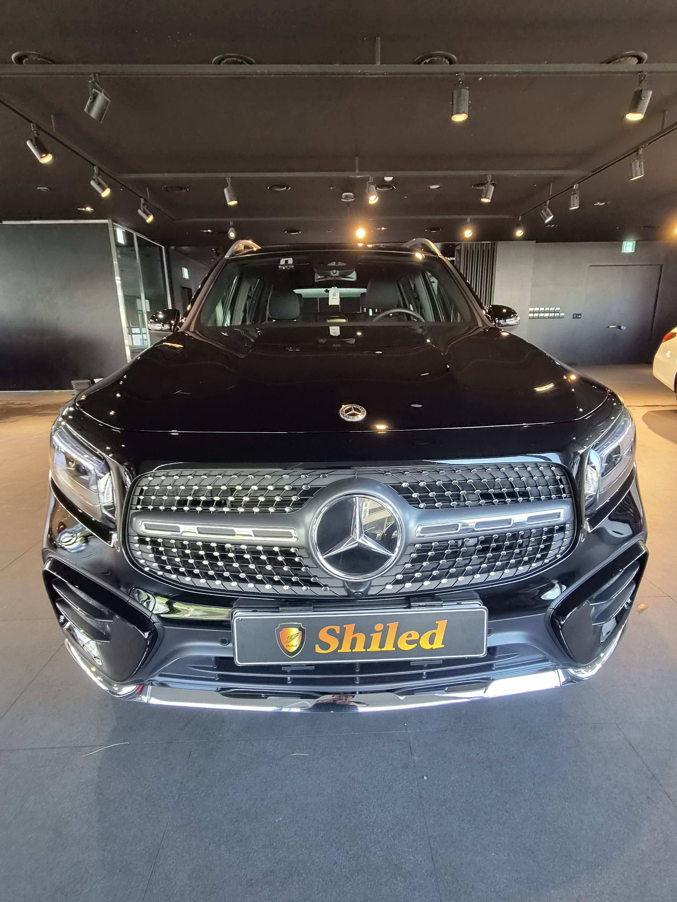
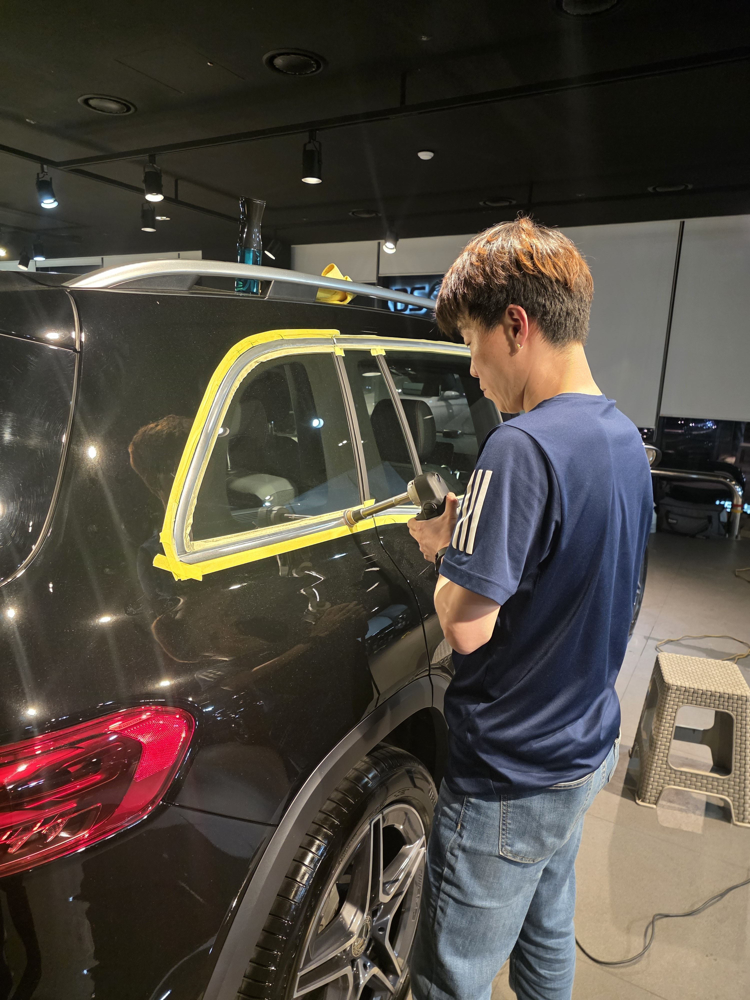
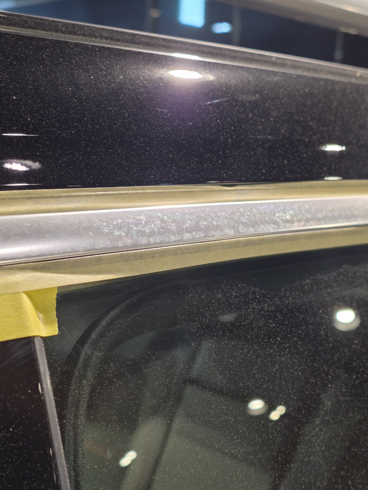
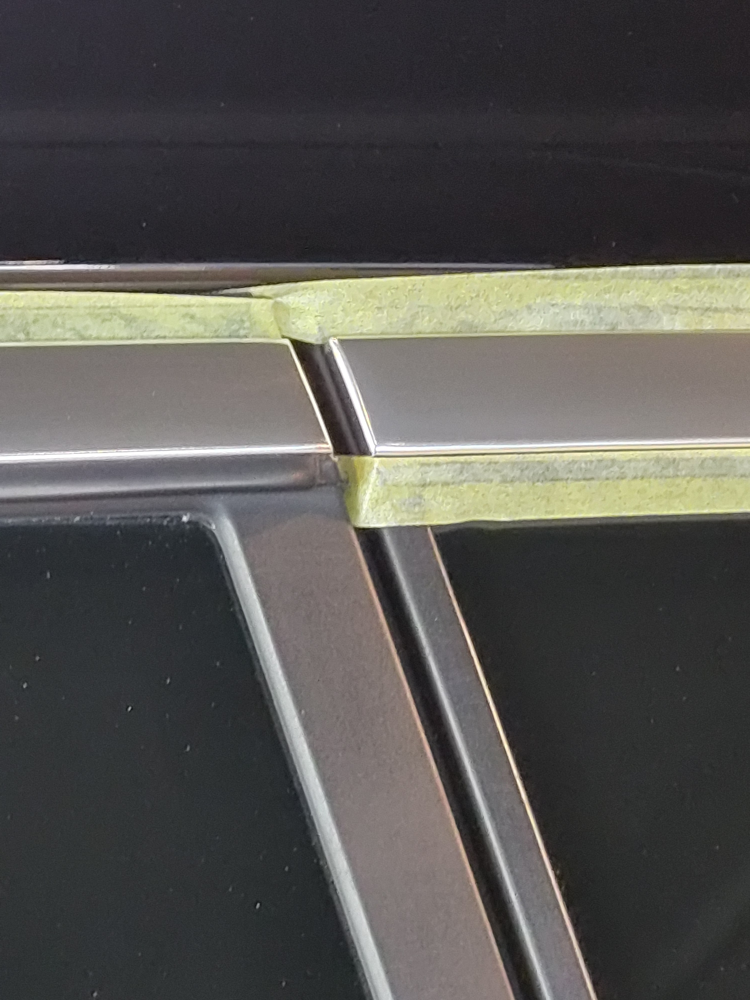
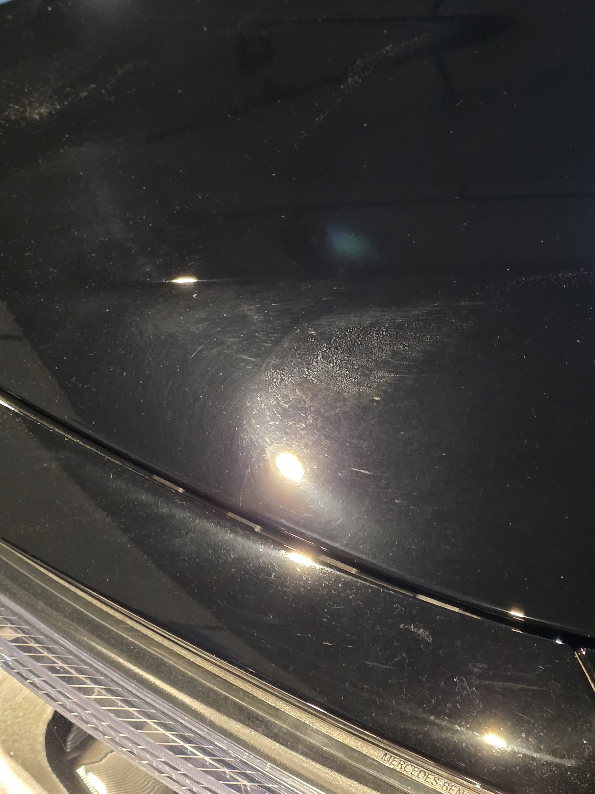
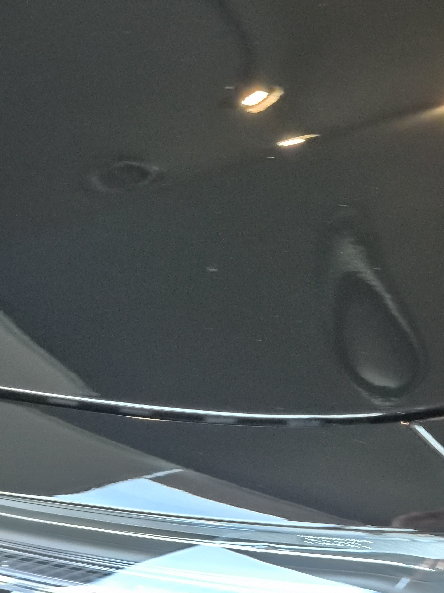
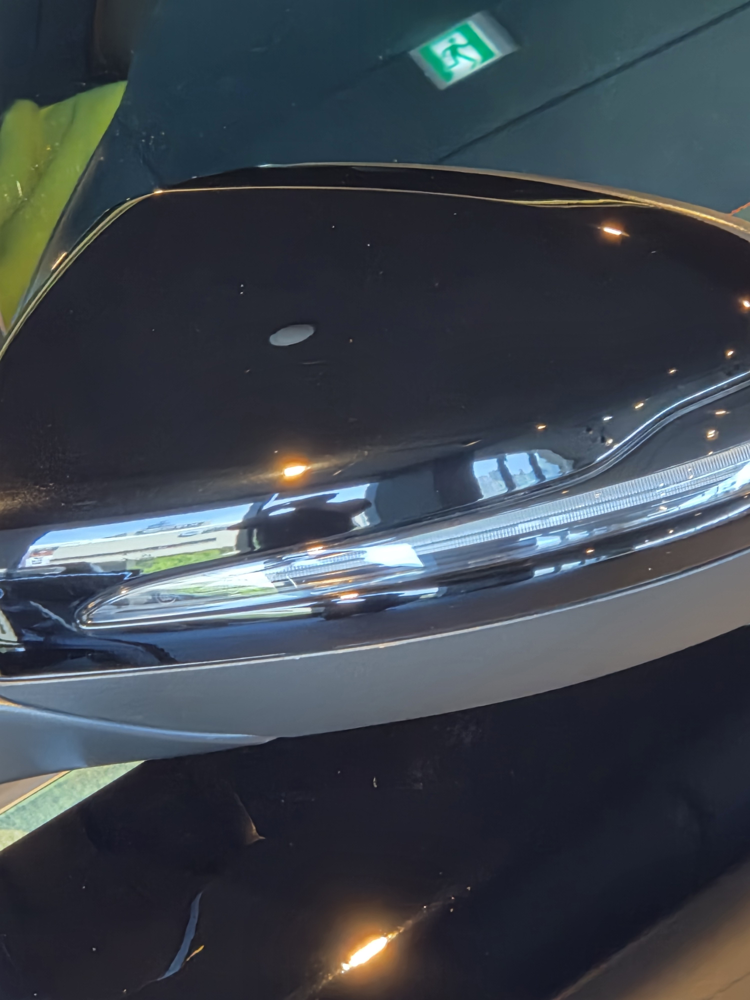
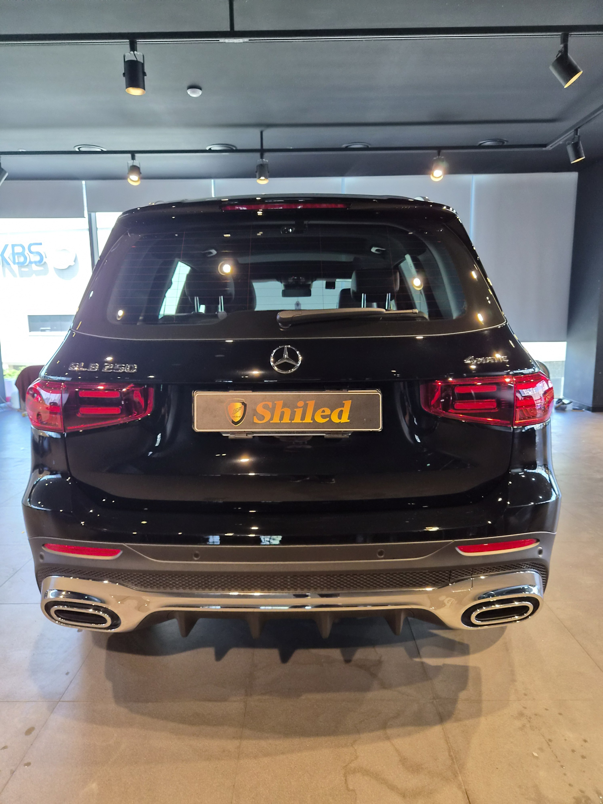

부산 쉴드광택에 들어온 벤츠 GLB250입니다. 검정 바디입니다.
이 차는 검정 도장 광택과, 하얗게 산화된 알루미늄 창틀 몰딩 복원을 함께 진행했습니다.

알루미늄 창틀 몰딩은 왜 하얗게 변하나
알루미늄이 공기와 수분에 반응해 산화되기 때문입니다.
출고 때는 거울처럼 반짝이던 창틀 몰딩이, 시간이 지나면 하얗게 뿌옇게 흐려집니다. 심하면 얼룩처럼 자국이 남습니다. 이건 때가 아니라 금속 표면이 변한 것이라, 세차로는 절대 지워지지 않습니다.
몰딩 복원은 어떻게 하나
산화된 표면층을 직접 걷어내고, 다시 광을 올립니다.
먼저 주변 도장과 유리를 마스킹으로 보호합니다. 몰딩만 노출시킨 뒤, 산화층을 단계별로 제거하고 광을 냅니다. 교체하지 않고 원래의 거울 반사를 되살리는 작업입니다. 부품 교체보다 비용이 적게 들고, 차 전체 인상이 크게 달라집니다.

주변을 마스킹으로 보호하고 몰딩만 노출시켜 작업합니다
기술자의 팁
몰딩 복원은 마스킹이 절반입니다. 산화 제거제가 도장면에 닿으면 안 되기 때문입니다. 경계를 깔끔하게 막아야 몰딩만 살리고 도장은 건드리지 않습니다.
검정 광택, 전처리가 9할입니다
검정은 잔기스가 가장 잘 보이는 색입니다.
디테일링 세차로 표면 오염을 걷어내고, 철분 제거제로 박힌 쇳가루를 녹여냅니다. 탈지까지 끝낸 뒤에야 광택에 들어갑니다. 잔기스 깊이를 보고 필요한 만큼만 깎아 표면을 평탄하게 잡습니다. 무조건 세게 깎는 게 정답은 아닙니다.
광택·복원 전후, 같은 자리가 어떻게 달라지나
말로 설명하는 것보다, 같은 자리를 전후로 비교하는 게 정확합니다.
아래는 작업 전과 작업 후에 같은 위치를 같은 조명 아래에서 찍은 사진입니다.


창틀 몰딩 — 하얗게 흐려져 있던 표면이 거울처럼 돌아왔습니다


검정 도장 — 깔려 있던 잔기스가 정리되고 깊은 검정이 돌아왔습니다
마감 후
몰딩에 다시 빛이 또렷하게 맺힙니다.
하얗게 흐려져 있던 창틀이 거울처럼 반사를 되찾았습니다. 검정 도장은 잔기스가 정리되면서 깊은 톤이 살아났습니다.


시공 후, 이렇게 관리하세요
몰딩은 다시 산화되지 않게 관리하면 더 오래 갑니다.
세차 후 물기를 그대로 두면 얼룩과 산화가 빨라집니다. 마른 수건으로 물기를 닦아주시는 습관이 몰딩과 도장 모두에 도움이 됩니다. 검정 도장은 자동세차(기계세차)의 브러시가 잔기스를 만드니 피하시는 게 좋습니다.
자주 묻는 질문
Q. 알루미늄 창틀 몰딩은 왜 하얗게 변하나요?
A. 알루미늄이 공기·수분과 반응해 산화되기 때문입니다. 반짝이던 몰딩이 하얗게 흐려지고 얼룩이 남습니다. 때가 아니라 금속 표면이 변한 것이라 세차로는 지워지지 않습니다.
Q. 하얗게 변한 몰딩을 다시 살릴 수 있나요?
A. 교체 없이 복원할 수 있습니다. 산화된 표면층을 단계별로 제거하고 다시 광을 내면 거울 반사가 돌아옵니다. 부품 교체보다 비용이 적게 듭니다.
Q. 검정차 광택은 왜 어렵나요?
A. 검정은 빛을 그대로 반사해 스월이 가장 잘 보이는 색입니다. 조금만 잔기스가 있어도 티가 나서, 잔기스 깊이에 맞춰 필요한 만큼만 깎아 표면을 평탄하게 잡아야 합니다.
Q. 쉴드광택 위치와 예약은 어떻게 하나요?
A. 부산 남구 유엔로220 1F 쉴드광택입니다. 예약·상담은 010-3384-1850, 대표 최한중이 직접 상담하고 책임 시공합니다.
광택부터 산화된 몰딩 복원까지, 한 곳에서 책임지고 잡아드립니다.
제품을 직접 만드는 사람이 직접 시공합니다.
부산에서 광택·몰딩 복원을 고민 중이시면 편하게 연락 주십시오.
어떤 차를 타냐보다 어떻게 타냐가 중요합니다~!
📞 010-3384-1850 견적 문의쉴드광택 · 부산 남구 유엔로220 1F · 대표 최한중